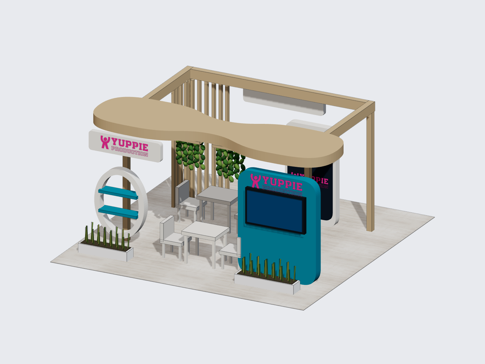

01 · Canopy Garden
ซุ้มไม้โค้งออร์แกนิก ระแนงไม้ สวนแขวน แผงทีวีสีฟ้าและป้ายโชว์วงรี พร้อมโต๊ะเจรจา 2 ชุด
หน้าจอและกรอบทีวีเป็น Group เดียวกัน ปรับแบบต่อใน Workspace 3D ได้
กว้าง 6 × ลึก 6 × สูงประมาณ 3 ม. · เปิดทั้ง 4 ด้าน · ใช้โลโก้ YP ตั้งต้น

ซุ้มไม้โค้งออร์แกนิก ระแนงไม้ สวนแขวน แผงทีวีสีฟ้าและป้ายโชว์วงรี พร้อมโต๊ะเจรจา 2 ชุด
หน้าจอและกรอบทีวีเป็น Group เดียวกัน ปรับแบบต่อใน Workspace 3D ได้